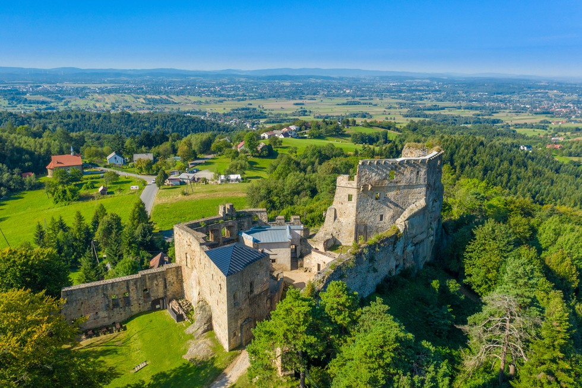

Podkarpacie to ziemia o bogatej przeszłości, gdzie tradycja spotyka się z duchem postępu.
Powrót na stronę głównąPodkarpacie, położone w południowo-wschodniej Polsce, od wieków było terenem pogranicza i przenikania się różnych kultur. W średniowieczu rozwijały się tu grody, m.in. w Przemyślu i Sanoku, a region włączony został do państwa polskiego. W kolejnych stuleciach Podkarpacie narażone było na liczne najazdy, ale jednocześnie kwitł handel i życie miejskie. Po rozbiorach ziemie te znalazły się w granicach monarchii austro-węgierskiej jako część Galicji, stając się miejscem odradzania polskiej kultury i ruchów niepodległościowych. W XX wieku region mocno ucierpiał podczas II wojny światowej, a po 1945 roku odbudował się, rozwijając m.in. przemysł lotniczy i metalowy. Dziś Podkarpacie znane jest z pięknych krajobrazów, turystyki w Bieszczadach, zabytków drewnianej architektury oraz nowoczesnej gospodarki opartej na lotnictwie i nowych technologiach.